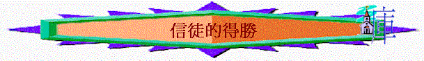

三.信徒的得勝
1.得勝的生命
A.已脫離魔鬼的權下
「我差你到他們那裡去，要叫他們的眼睛得開，從黑暗中歸向光明，從撒但權下歸向神；又因信我，得蒙赦罪，和一切成聖的人同得基業。』」」徒26:18
B.已得著得勝的生命
「父老啊，我寫信給你們，因為你們認識那從起初原有的。少年人哪，我寫信給你們，因為你們勝了那惡者。小子們哪，我曾寫信給你們，因為你們認識父。」約壹2:13
「小子們哪，你們是屬神的，並且勝了他們；因為那在你們裡面的，比那在世界上的更大。」約壹4:4
「因為凡從神生的，就勝過世界；使我們勝了世界的，就是我們的信心。」約壹5:4
〜信徒已擁有得勝罪、世界、死亡的生命，我們可以有能力抵擋撒但的引誘。
2.得勝的元帥
「原來那為萬物所屬為萬物所本的，要領許多的兒子進榮耀裡去，使救他們的元帥，因受苦難得以完全，本是合宜的。」來2:10
「兒女既同有血肉之體，他也照樣親自成了血肉之體，特要藉著死敗壞那掌死權的，就是魔鬼，並要釋放那些一生因怕死而為奴僕的人。」來2:14-15
3.基督的榜樣
〜耶穌面對魔鬼的試探，祂卻至終可得勝，因為
A.每天儆醒
∼當時耶穌被引到曠野，祂不知道魔鬼幾時試探祂，可能是第一日，可能是第二日，或兩個月後，若不是每天儆醒度日，預備面對試探，隨時可以落入鬆懈而跌入魔鬼的網羅中
B.時刻想神
「耶穌卻回答說：「經上記著說：人活著，不是單靠食物，乃是靠神口裡所出的一切話。」4:4
「耶穌對他說：「經上又記著說：『不可試探主你的神。』」」4:7
「耶穌說：「撒但（撒但就是抵擋的意思，乃魔鬼的別名），退去吧！因為經上記著說：當拜主你的神，單要事奉他。」」4:10
∼面對肉體需要，祂想起人活著乃靠神所說的話，面對是否跳下去，祂想起不可試探神，面對萬國的榮華，祂想起單要事奉神….祂不是想起自己的慾望與需要，而是想起神，神如何想，神的屬性，吩咐，至終令祂得勝
C.熟練聖經
∼撒但也斷章取義引用聖經，但耶穌每次面對，也引用申命記的說話，若不熟練，如何與撒但應對
D.絕不妥協
∼祂可以因為肚餓，稍為體恤自己，也可以因魔鬼引用的經文如此行，但對於絕對真理，祂每一次，也沒有妥協，立場堅
4.基督的寶血
「弟兄勝過他，是因羔羊的血和自己所見證的道。他們雖至於死，也不愛惜性命。」啟12:11
〜我們可以不怕撒但的控告，因基督的寶血可使我們稱義
5.聖經的話語
「父老啊，我曾寫信給你們，因為，你們認識那從起初原有的。少年人哪，我曾寫信給你們；因為，你們剛強，神的道常存在你們心裡；你們也勝了那惡者。」約壹2:14
「弟兄勝過他，是因羔羊的血和自己所見證的道。他們雖至於死，也不愛惜性命。」啟12:11
〜我們所見證的道----神的話就可以使我們分辨是非，行在神的心意中，也使我們成聖，更可以有力勝過撒但的迷惑。
6.至死的忠心
「．．．．．．他們雖至於死，也不愛惜性命。」啟12:11
∼魔鬼或許用苦難攻擊信徒，但我們若有至死忠心的心，我們最終可得勝！
7.信徒的忍耐
「且有好些假先知起來，迷惑多人。只因不法的事增多，許多人的愛心才漸漸冷淡了。惟有忍耐到底的，必然得救。」太24:11-13
「那先前忍耐的人，我們稱他們是有福的。你們聽見過約伯的忍耐，也知道主給他的結局，明顯主是滿心憐憫，大有慈悲。」雅5:11
「擄掠人的，必被擄掠；用刀殺人的，必被刀殺。聖徒的忍耐和信心就是在此。」啟13:10
〜如何可以在苦難中至死忠心，信徒需要有忍耐(如約伯一樣)，可以使我們仍能堅忍，使我們至終誇勝。
8.堅固的信心
「你們要用堅固的信心抵擋他，因為知道你們在世上的眾弟兄也是經歷這樣的苦難。」彼前5:9
〜面對撒但的攻擊及帶來的苦難，信徒要有信心，信心令我們不動搖，令我們更忍耐，也使我們在苦難中更堅固地站穩。
9.時刻的儆醒
「務要謹守，警醒。因為你們的仇敵魔鬼，如同吼叫的獅子，遍地遊行，尋找可吞吃的人。」彼前5:8
〜即使沒有困難，在平安穩妥的日子，我們仍要時刻儆醒，不要給牠留地步
10.試探的遠離
「不叫我們遇見試探；救我們脫離兇惡（或作：脫離惡者）。因為國度、權柄、榮耀，全是你的，直到永遠。阿們（有古卷沒有因為至阿們等字）！』」太6:13
「你要逃避少年的私慾，同那清心禱告主的人追求公義、信德、仁愛、和平。」提後2:22
〜如何不給魔鬼留地步，我們不要嘗試走到兇惡�堶情A反而要遠離試探，逃避私慾。
11.神能的倚靠
「我還有末了的話：你們要靠著主，倚賴他的大能大力作剛強的人。」弗6:10
「總要警醒禱告，免得入了迷惑。你們心靈固然願意，肉體卻軟弱了。」太26:41
〜但不是自己就能遠離及儆醒的，我們要用禱告倚靠神的能力勝過撒但的試探與迷惑
12.全副的軍裝
「要穿戴神所賜的全副軍裝，就能抵擋魔鬼的詭計。」弗6:11
「所以，要拿起神所賜的全副軍裝，好在磨難的日子抵擋仇敵，並且成就了一切，還能站立得住。所以要站穩了，用真理當作帶子束腰，用公義當作護心鏡遮胸，又用平安的福音當作預備走路的鞋穿在腳上。此外，又拿著信德當作藤牌，可以滅盡那惡者一切的火箭；並戴上救恩的頭盔，拿著聖靈的寶劍，就是神的道；」弗6:13-17
〜要穿戴全副軍裝，不可少一件，目的是能抵擋魔鬼的詭計
A.真理的帶子
〜人喜歡放縱自己，但真理使我們可以約束自己，更能束起其它軍裝，令我們在抵擋的方法更有真理支持
B.公義的護心鏡
〜「公義」即義(righteousness)，神眼中看為正的事，撒但時常想令我們不義，不服律法，行罪惡，所以先令我們的心有不義的想法，但若神的公義常我們內心，使我們能抵擋及分辨不義的意念。
C.平安的福音鞋
〜福音是神的大能，可以救一切在撒但權勢下的人脫離轄制，若我們將福音傳開，隨走隨傳，使人得著真正的平安，與神與人建立和平關係，撒但某程度轄制人的權勢也瓦解。
D.信德的籐牌
〜信德即信心，使我們勝過世界的就是信心，撒但時常想令我們灰心、動搖、懼怕、懷疑，如火箭一樣，可以漫延影響其他人，但信心使我們堅固、剛強，有力量。
E.救恩的頭盔
〜撒但可以加患難給我們，甚至殺害我們，但那殺身體，不能殺靈魂的不要怕牠，因為我們已得著救恩，神的恩召及將來的榮耀是何等有盼望及豐富的，我們的思想(頭腦)當仰望那救恩帶來的盼望，就使我們不再懼怕前面的艱難。
F.聖靈的寶劍
〜就是神的道，聖靈幫我們明白神的道，神的道如利劍能剖開我們心思意念，令我們更儆醒，知道有沒有惡在我們�堶情C
〜神的道也使我們能辨清似是而非的道理，若我們時常行出神的話，順服神的心意，魔鬼也要遠離我們
13.真理的驗正
「親愛的弟兄啊，一切的靈，你們不可都信，總要試驗那些靈是出於神的不是，因為世上有許多假先知已經出來了。凡靈認耶穌基督是成了肉身來的，就是出於神的；從此你們可以認出神的靈來。凡靈不認耶穌，就不是出於神；這是那敵基督者的靈。你們從前聽見他要來，現在已經在世上了。凡靈不認耶穌，就不是出於神；這是那敵基督者的靈。你們從前聽見他要來，現在已經在世上了。」約壹4:3-4
14.專心的禱告
「至於這一類的鬼，若不禱告、禁食，他就不出來（或作：不能趕他出來）。」太17:21
15.凡事的順服
「故此你們要順服神。務要抵擋魔鬼，魔鬼就必離開你們逃跑了。」雅4:7
∼人穿了全副軍裝，仍要學習順服軍隊的元帥，當然順服神，聖經說魔鬼就必離開我們！
16.溫柔的勸戒
「然而主的僕人不可爭競，只要溫溫和和的待眾人，善於教導，存心忍耐，用溫柔勸戒那抵擋的人；或者神給他們悔改的心，可以明白真道，叫他們這已經被魔鬼任意擄去的，可以醒悟，脫離他的網羅。」提後2:24-26
〜但若有人真是跌倒了，我們可用溫柔的勸戒他們，或許可以領一些被魔鬼擄去的人出來，醒悟回轉過來。
17.真神的保守
「那能保守你們不失腳、叫你們無瑕無疵、歡歡喜喜站在他榮耀之前的我們的救主獨一的神，願榮耀、威嚴、能力、權柄，因我們的主耶穌基督歸與他，從萬古以前並現今，直到永永遠遠。阿們。」猶24-25
〜但真正能保守我們的不是我們，也不是別人，而是我們獨一的神！
附篇文章: 如何抵擋魔鬼
吃晚飯的時候(魔鬼已將賣耶穌的意思，放在西門的兒子加略人猶大心��)」
約13:2
很難想像一個跟主耶穌有一段日子的門徒，竟然會賣耶穌；更意想不到的是魔鬼竟可不知不覺走到人的心中，將一個很恐怖、很敗壞的意念放在人心中，牠竟然可以靜悄悄入到人最深處。猶大竟然毫無防衛力，就宣告失敗！好像日軍在無聲無色中可以偷襲珍珠港，強如美國也要跨台！的而且確，在信仰路中，即使我們有很多經驗，信主的日子也不淺，也成為一家之主，又成為家中的管教者，但我們不得不承認，撒但如咆哮的獅子，遍地遊行，很多時候，就是一個意念，不知不覺的意念，幾多經驗的我們也都跌倒了，但我們是否注定軟弱呢？是否不還擊？怎樣可以抵擋牠？感謝神，從聖經中，可給我們幾個得勝抵擋魔鬼的秘訣。
1)
羔羊的血
「弟兄勝過牠，是因羔羊的血，和自己所見證的道……..」啟12：11
從前看一些恐怖電影(未信主前)，主角與惡魔爭戰，往往最後出到「十字架」道具，就可以得勝。在現實生活中，或許我們不是有很多巨型木製十字架、也沒有很多像立陶苑十字架山上形形式式的十架，但我們有的是更能勝過這些的武器─羔羊的血。無錯，我們要承認偶然又犯錯了、又亂發了脾氣，理性想愛主但心靈卻不愛、又說謊了、立了志不犯又失敗了，但每一次來到施恩座前，羔羊的血，仍歷久有果效，任何內咎，控告，也可消除；不知我們最近有否靠羔羊的血勝過，潔淨我們的軟弱呢？
2)
神的道
另外，恐佈片的主角往往靠一些神父手執聖經驅魔，但現實中，我們知道聖經對驅邪沒有多大幫助，唯有聖經內的神之道，如活在人心，如果那人信了主很多年，仍高舉神的話語，仍以神的話語為工作，教養之準則，那人就可得勝，不知大家有否試過，當讀經馬虎時，聽道不入心時，神的道好像不在心中，那段日子失敗的機會也相對提高，不知我們最近對神的道反應又如何呢？
３)
靠主
「我還有末了的話，你們要靠著主，倚賴他的大能大力，作剛強的人」弗6:10
作為父母，應更清楚何謂「靠主」，Baby本身很軟弱，自我防衛能力比大人低，但當他們在母親懷裡，完全投靠，如斷過奶的嬰孩，則最安全，靠主就是這個意思，幾時覺得自己OK，自己「掂」，往往是失敗開始，勇敢承認自己是不堪一擊的人，完全放低自己，投靠主，每天向主說聲：「主啊！今天沒有你，我不能作剛強的人，我不可以沒有你，求你幫我不遇見試探，使我得勝，屬靈的簡單方法，最老新常談之道往往是最有效之法！不知我們每天是否真正的靠主呢？」
４）裝備
「要穿戴神所賜的全副軍裝，就能抵擋魔鬼的詭計。」
有時，在街上，很佩服一些警察，大熱天時（超過３０度），但仍穿著似乎十分焗身又累贅的制服，佩帶一定數目的裝備，但無論天氣有多酷熱，他們也不能隨便放低任何物件，這些物件對執行任務有很大的幫助。在信仰路上，信得越久，或許我們會有一種感覺：信仰是自由的，行天路也不要太累贅，隨心�堣閬﹛A只要不違背真理就可以。但要面對屬靈氣惡魔，我們卻不可以怕麻煩，聖經說要「穿上全副軍裝」，一件也不能少，要有裝備，不要以為已經足夠，而是不斷加添、穿上，加上什麼？要加上真理、要加上公義、要加上福音、更要加上信德（信心），一個基督徒若踏實，不斷追求以上幾方面，他的軍裝會十分堅固；相反，若他被忙碌所佔據，忽略了自己的追求，很久也沒有認真追求生命，信心的事，過得一日就一日，他慢慢一件一件裝備失去，漸漸會完全赤身迎戰撒但，必走上失敗之路；所以怎樣忙碌也好，不要忽略裝備，怎樣煩也好，有時都要用１５分鐘靜一靜，思想我今日追求生活如何，我的生命仍欠什麼呢？會否是公義，會否是信心呢？若發現，要配給裝備(可能會要用一些時間及代價)，但是值得的！